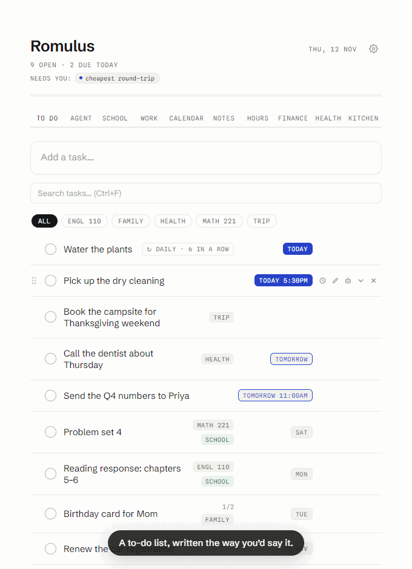
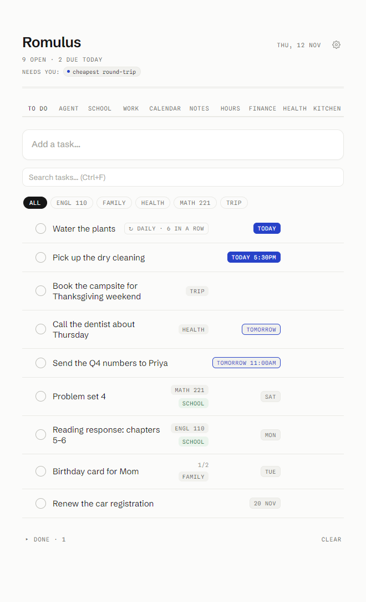
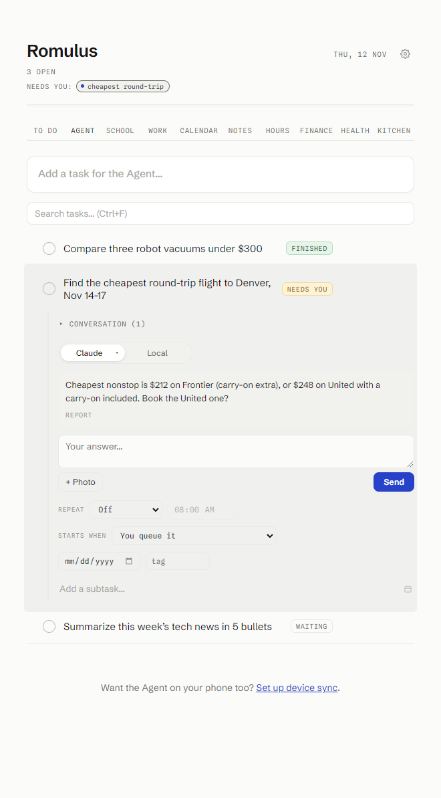

A to-do list with an agent in it.
Write a task the way you'd tell a person and hand it to the Agent. It searches, fills forms, compares prices and builds the cart, and checks in only when it needs a decision.
Also for every other platform, or run it from source.



Made-up demo data.
It asks before anything final.
The Agent never buys, sends, submits, books or deletes until you say yes to the exact thing it described. That rule is enforced in code.
Use what you already pay for.
Claude, ChatGPT, Gemini, OpenRouter, free tiers like Grok and Groq, or your own model through Ollama. Connect several and it tries them in your order.
Some tasks never leave your machine.
Banking, medical records and passwords go only to your local model, and so does the Locked profile that fills in forms. Run it on a second computer and it serves every device.
A Finance tab instead of Rocket Money.
Every account in one place, bills and subscriptions found for you (Cancel hands one to the Agent), net worth over time and live stock prices. Bank access for about $15 a year, encrypted on your computer.
What's inside
The same tabs on your computer and your phone, kept in sync.
Your own to-dos: due dates, tags, subtasks, repeats, search.
Tasks the AI does, with a live view of its work and its questions.
Assignments with due dates from Blackboard or D2L.
A second list, synced with the rest.
The month, a board of notes, hours per day. Google and Microsoft calendars.
Accounts, bills, net worth and stock prices, encrypted and locked.
What the Agent can do: research and writing; shopping and groceries on Amazon, Walmart, Target, Best Buy and Shopify stores; any other store through a one-time Link card; flights and bookings; forms and job applications; email; a morning look-ahead; tasks that start when an email arrives or a page changes; deep research (#legion) split so no single cloud AI sees the whole question; a Coach me brief for things only you can do, like a class video or an interview; a browser you can watch and take over.
Download
Free, and it updates itself. Every file is built from the public source, with checksums on the release page.
chmod +x) and run it. On Ubuntu 22.04 or newer, install libfuse2t64 first.
Ubuntu, Debian, Mint: open it to install (or sudo apt install ./ the file). Other distributions: the .AppImage on the release page, made executable (chmod +x).
AndroidYour device
Romulus-1.3.0.apk
Open the APK and allow installs from this source. Then pair it from the desktop app in Settings → Device sync.
From source: Node 22 or newer, then npm install and npm start.
Then: the setup guide covers connecting an AI, your phone, calendars and Finance.
iPhone: runs from Xcode; not on the App Store yet.
Privacy, in short
What you connect stays on the computer you connected it on. No telemetry.
Questions
The short answers.
What is Romulus?
Romulus is a free, open-source to-do list app with an AI agent built in, for Windows, macOS, Linux and Android. You write a task the way you would tell a person and hand it to the Agent. It searches, fills forms, compares prices and builds the cart, and checks in only when it needs a decision.
Is Romulus free?
Yes. The app is free and MIT licensed, and every installer is built from the public source. Sync between your devices is free up to 5 MB on the Romulus server; a $5 a month plan raises that, or you can point it at your own Supabase project. Most people never need more: a typical list takes about 1% of the free space.
Which AI models does Romulus work with?
Claude, ChatGPT, Gemini, OpenRouter, free tiers like Grok and Groq, or your own model through Ollama. You can connect several and it tries them in your order.
Will the Agent buy or send anything without asking?
No. The Agent never buys, sends, submits, books or deletes until you say yes to the exact thing it described, and that rule is enforced in code. The AI never sees a card number: stores use the card they have on file, and anywhere else it gets a one-time Link card for the amount you approved.
Can Romulus order groceries and shop online for me?
Yes. It shops on Amazon, Walmart, Target, Best Buy and Shopify stores, and any other store through a one-time Link card. It builds the cart, tells you the total and delivery time, and waits for your yes before placing the order.
Can I use Romulus with a local AI model and keep private things off the cloud?
Yes. Banking, medical records and passwords go only to your local model through Ollama, and so does the Locked profile that fills in forms. Run the local model on a second computer and it serves every device.
Is Romulus an alternative to Rocket Money?
Its Finance tab covers the same ground without the subscription: every account in one place, bills and subscriptions found for you (Cancel hands one to the Agent), net worth over time and live stock prices. Bank access costs about $15 a year, the data is encrypted on your computer, and no cloud AI ever sees it.
Does Romulus work with Blackboard and D2L?
Yes. The School tab pulls assignments and due dates from Blackboard or D2L, and the Agent can write a brief for things only you can do, like a class video.
Is there an iPhone app?
Not on the App Store yet. The iPhone build runs from Xcode; Windows, macOS, Linux and Android have installers.
Open source
The whole app is on GitHub under the MIT license.
# run it from source
git clone https://github.com/jamesbobdev-gif/Romulus.git
cd Romulus
npm install
npm start
Contributing: small, focused changes land fastest. See CONTRIBUTING.md, and report security problems through SECURITY.md.